调度员可选择单个小组发出紧急组呼；亦可接听任一小组发起的紧急组呼。
在本节，我们主要介绍以下两种紧急组呼的发起/接听方式：
1）在系统操作菜单栏中单击［调度功能/呼叫面板］，弹出“呼叫面板”对话框。
2）单击“呼叫业务”模块中的“紧急呼叫”，弹出“紧急呼叫”对话框。输入小组标识，系统自动获取对应的组名、所属单位以及小组类型。
3）调度员通过按下＜PTT＞按钮来发起组呼，如图1.1所示。
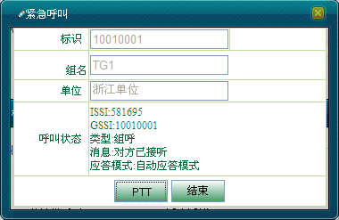
图1.1 发起紧急组呼
4）调度员释放＜PTT＞键释放发射权，如图1.2所示。按住＜PTT＞键获取授权。
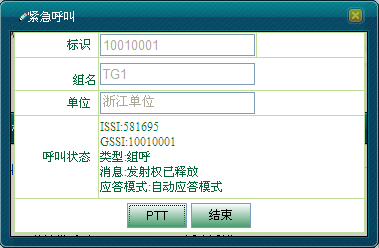
图1.2 调度台释放发射权
5）当调度员释放授权时，无线用户可按住PTT键获取授权，发送语音信息，如图1.3所示，释放PTT键则释放授权。
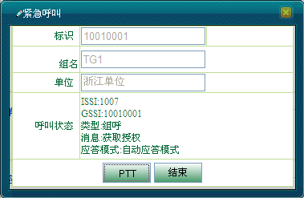
图1.3 用户获取授权
6）调度员可单击＜结束＞结束呼叫，如图1.4所示。
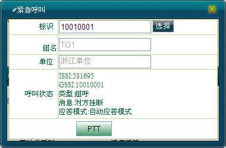
图1.4 结束紧急组呼
 说明：
说明：
在通话过程中，都会收到一系列的呼叫消息，组中最后一个用户挂断后，本次紧急组呼也没有结束，调度台发起的组呼，必须调度台结束呼叫才是真正的结束紧急组呼。
若调度员对没有任何在线的无线用户的小组发起紧急组呼，则会收到“对方挂断”的呼叫消息。
1）若调度台接收到用户“1007”发起的紧急组呼请求，此时地图上用户图标侧会有喇叭的图标显示，“紧急呼叫”对话框如图1.5所示。
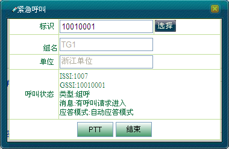
图1.5 呼叫请求进入
2）调度台按住＜PTT＞即可获取授权进行通话，如图1.6所示。释放＜PTT＞则释放发射权。
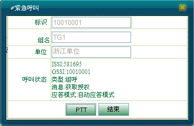
图1.6 调度台获取授权
3）当调度台释放发射权时，组内无线用户可按住PTT键发射语音信息，释放PTT键释放者授权，如图1.7所示。
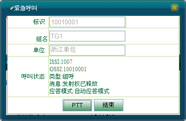
图1.7 用户释放发射权
4）通话结束时，调度台可单击＜结束＞结束紧急组呼。
1）若调度台接收到用户“1007（1007）”发起的紧急组呼请求，此时，呼叫上行面板的“紧急”面板显示如图2.1所示。
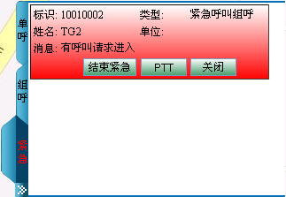
图2.1 有呼叫请求进入
2）调度员按住＜PTT＞键即可获取授权进行通话，如图2.2所示。单击＜结束紧急＞则拒绝接听。
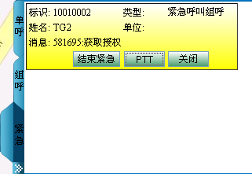
图2.2 调度台获取授权
3）调度员释放＜PTT＞释放授权。此时，组内无线用户可按住PTT键获取授权，发射语音信息，释放PTT键释放授权，如图2.3所示。
图2.3 用户释放发射权
4）通话结束后，调度台可单击＜结束紧急＞结束紧急组呼，此时＜结束紧急＞按钮变灰，如图2.4所示。
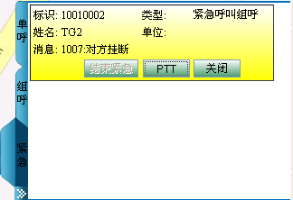
图2.4 结束紧急组呼
1）选中呼叫上行面板中的紧急组呼面板，调度员按下＜PTT＞按钮即可发起紧急组呼，如图2.5所示。
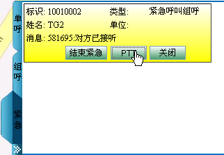
图2.5 发起紧急组呼
2）调度台释放＜PTT＞键释放发射权，如图2.6所示。按住＜PTT＞键获取授权。
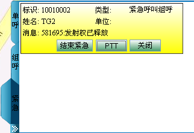
图2.6 调度台释放发射权
3）当调度员释放授权时，无线用户可按住PTT键获取授权，发送语音信息，如图2.7所示。释放PTT键则释放授权。
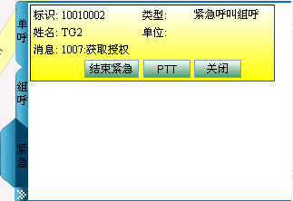
图2.7 用户获取授权
4）调度员可单击＜结束紧急＞结束紧急组呼。
说明：
在呼叫上行面板中，调度员只能对已有紧急半双工单呼上行记录的终端发起紧急半双工单呼。
调度台发起的紧急组呼，必须调度台结束呼叫才是真正的结束紧急组呼。
Copyright © 2012 Eastcom, Inc. All rights reserved. |
||